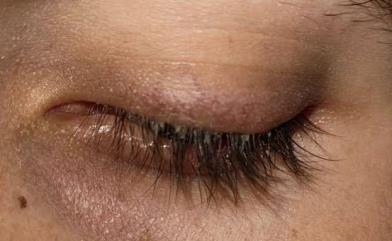
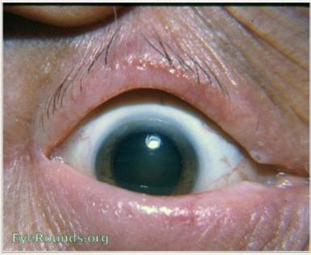
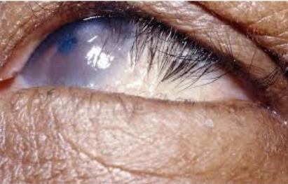
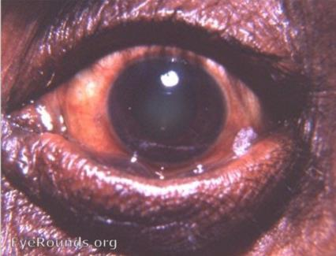
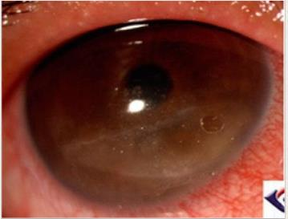
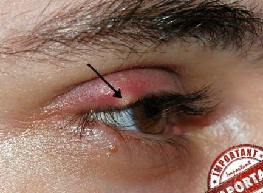
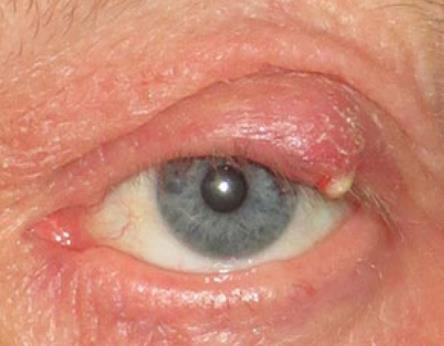

Part I · Blepharitis
Complications in photographs







Clinical figures accompanying the complications listed above in the source notes: trichiasis, madarosis, tylosis, styes, epiphora, conjunctivitis and marginal corneal ulcers.